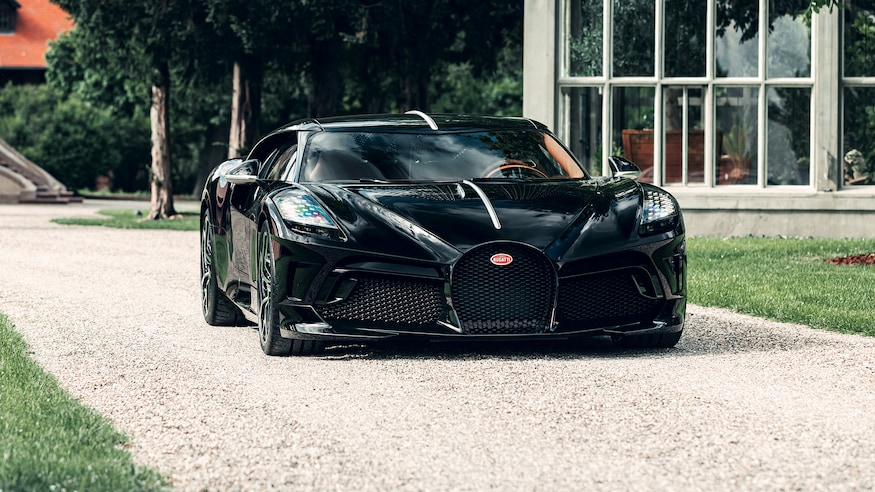
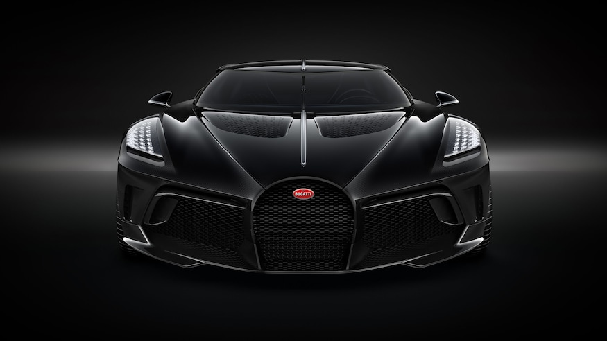

What's got 16 cylinders, four turbochargers, 1,500 hp, 1,180 lb-ft of torque, and an $18,905,235 price tag? That guy, aka the one of one Bugatti La Voiture
Noire. Too rich for your blood? Well, don't sweat it as the car's already been sold to a "Bugatti enthusiast" who is "fascinated" by the Type 57SC Atlantic Coupe.
Previously, we reported that this one-off creation cost the owner $12,500,000, but the mystery buyer actually ended up paying almost $19,000,000 after taxes. La Voiture Noire was built to celebrate Bugatti's 110-year anniversary, as well as in an homage to the second of the four Type 57SCs—the original "la Voiture Noire," which literally translates to "the black car"—driven by Jean Bugatti himself as well as some of his grand prix driver buddies. That car was hidden by Bugatti before World War II and has not been seen since. Should that OG black beauty ever emerge it would be worth about $100,000,000! Speaking of big money, Bugatti is claiming that La Voiture Noire is, "the most expensive new car of all time." Well, I seem to recall the Rolls-Royce Sweptail selling for $13,000,000 a year or so ago. And those three Bugatti Zonda Barchetta's were about $17,000,000 apiece. So yeah, close enough to $19,000,000 makes The Black Car the price champ.

Visually, the Voiture Noire differs from the garden-variety Chiron by losing the latter's big C shapes on the sides. The nose is quite a departure as well, though the look was previewed in a way by last year's limited-run $5,800,000 Divo. The snout is pointier, if not busier, with lots of little vents/louvers atop the frunk lid. Gone are the angry, square eyes, having been replaced by more insectoid-like LEDs. Like the Type 57SC that inspired it, La Voiture Noire has a central spine that runs nearly the entire length of the car, with the windshield wiper standing upright while at rest. The rear of the new car is probably the biggest departure style-wise from the Chiron, especially those six, fat tailpipes. Why six? That's how many some of the Atlantics had. The light blue Type 57SC owned by Peter Mullin has five pipes. Ralph Lauren's has six. Go figure. Curiously, Bugatti claims that La Voiture Noire is not a hyper sports car like the Chiron, but is instead now a grand tourer. Perhaps, though if the luggage space is still limited to a medium-size purse and a pack of chewing gum, I'll beg to differ. I might also add that for nearly $19,000,000 I'd like a little more power than some bozo in a 1,500-hp Chiron. Perhaps that's just me. Still, in the era of more and more restrictive crash standards, a truly coach-built car is a wonderful thing. As The Black Car sits, the thing is further proof that now more than ever, it's good to be filthy, stinking rich.